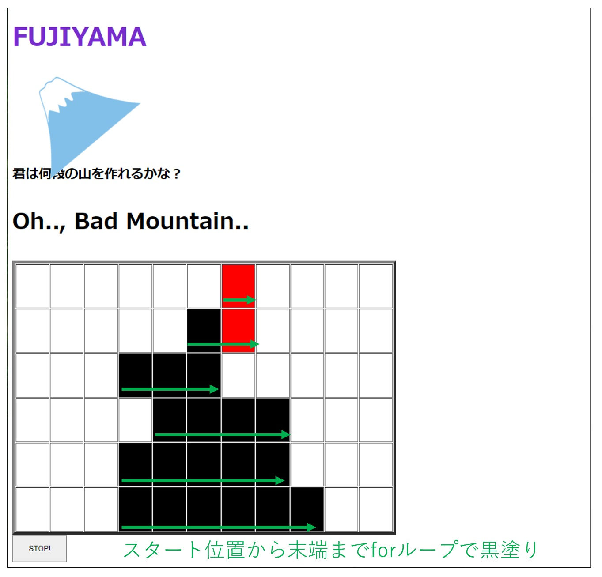

⇒getElementByIdなどで、tableの要素を取得し、子要素のセルのstyle.backgroudColorに色を設定している
⇒授業で一瞬でてきたsetTimeOut関数に似たsetIntervalという関数を使用している
〇実行例
setInterval(rotateImgFunc,100)のように、第一引数に関数、第二引数に時間[msec]を与える
そうすることで、100[msec]の間隔でrotateImgFuncを実行され、画像が回転している
⇒セルの色塗り処理はループ処理で実行している
